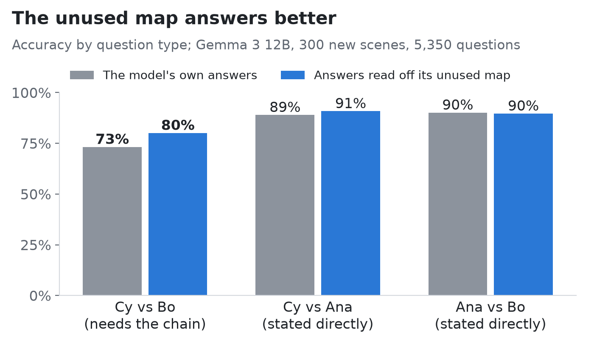

Pick a spot on the map and drag the slider: two numbers inside Gemma 3 are edited, the text stays the same, and the model's answers follow the object. Open the demo on its own page.
What I found
I gave Gemma 3, an open AI model from Google, small scenes described only in words, like “Ana is 3 units north of Bo. Cy is 2 units east of Ana.” Then I asked questions the text never answers directly, such as “Is Cy further north than Bo?” Inside the model, a simple decoder can read where every object is, including Cy, whose position you only get by combining two sentences. It even holds distances, which you can’t get by just adding the sentences up. The model really does build a map of the scene.
But its answers don’t use that map. I deleted the map at every word and across many layers, and the answers got no worse than when I deleted random directions instead. The same held on harder scenes with four or five objects. What the answers use is each object’s own sentence: two numbers inside it steer them. Editing those two numbers moves 72% of the affected answers (83% in the larger 27B model, 0% for random numbers), and they act like a switch between stated facts, not a point on a map. The model also cuts a corner. When Cy moves because its own sentence changed, it updates its answers 39% of the time; when Cy moves to the same spot because Ana’s sentence changed, only 21%.
So I asked whether the unused map would have done better. It would. Reading the answers off the model’s own map gets questions that need the chain right 80% of the time, against 73% for the model’s actual answers. On questions a sentence states directly, the two tie at about 90%. Pushing the model’s attention toward its map doesn’t help; it only distracts it. The model holds a better answer than the one it gives and never looks at it. This is one model family on simple puzzles, and every test was written down before its data existed.

Go deeper
- The paperThe Model Knows Better Than It Answers, preprint on Zenodo, with every test and number.
- Code and datagithub.com/ccgomezn/geometry-llm: all experiments, results, and the preregistrations, each committed before its data existed.
- The story, part 1The AI worked out where things are, even when nobody told it
- Part 2I found the map inside the AI. Then I deleted it, and nothing happened
- Part 3The AI knew better than it answered